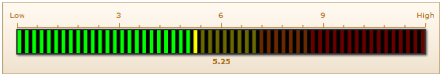
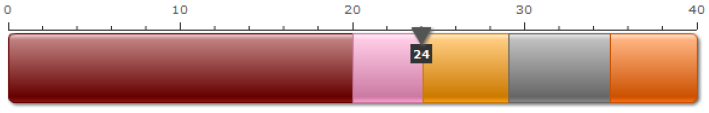

|
Developed By MissConsult.com
Introduction: The Sales Performance Predictor is the specific test for Sales Position only, an individual's Sales Performance Predictor results can be predicted as the level of suitable for Sales Position. The objective of this test is to provide the sales qualification data for company as the supportive tool for Sales Selection processes. The report provide the potential of qualification in each of individual that be considered as important qualification for Sales Position. แบบประเมิน Sales Performance Predictor หรือ Sale PP® เป็นแบบประเมินสำหรับตำแหน่งงานฝ่ายขายเท่านั้น โดยรูปแบบประเมินเป็นการ ประเมินถึงระดับความเหมาะสมของบุคคลในการทำงานสำหรับตำแหน่งงานฝ่ายขาย วัตถุประสงค์ของแบบประเมินคือ เครื่องมือสนับสนุนในการคัดเลือก พนักงานเข้าสู่ตำแหน่งงานฝ่ายขายโดยแบบประเมินจะให้แนวโน้มทางด้านคุณสมบัติที่จำเป็นต้องมีของบุคคลสำหรับตำแหน่งงานฝ่ายขาย ผลการทดสอบของคุณ ธรรศ พงศาสนองกุล เป็นดังนี้ 1. ลักษณะการตอบคำถามของแบบทดสอบ - Lie Detector Result Neutral: A tester is neutral lying on testing. She/he may want to make the test result to be good so that she may lie some points but the test result is reliable. ผู้ทดสอบอาจมีความกังวลในการทำข้อสอบหรือคิดมาก ทำให้ตอบข้อสอบบางข้อเพื่อตั้งใจดูดีหรือตั้งใจให้ผลออกมาดีแต่สามารถเชื่อถือผลคะแนนได้ 2. ผลทดสอบ Sales Scale - Sales Performance Predictor Result The Sales Performance Predictor is designed as a supportive tool for Sales selection which provide the potential of qualifications which be considered as important for Sales Position such as Ambition, Positive Thinking, Work well under pressure, High competitive Problem solving and Fast learning. Also provide the data about the potential of qualification that can be found from the test in the table format as better consideration. แบบทดสอบวัดคุณสมบัติของผู้ทำงานในตำแหน่งงาน Sales เพื่อวัตถุประสงค์การคัดเลือกบุคคลผู้มีคุณลักษณะและคุณสมบัติที่เหมาะสมและมีแนวโน้มในการทำงานได้ มีประสิทธิภาพสูงสุดต่อตำแหน่งงาน Sales แบบทดสอบ Sales ถูกออกแบบเพื่อวัดแรงจูงใจ กระตุ้น และความต้องการประสบความสำเร็จในการทำงานซึ่งรวมถึง ความต้องการเป็นอิสระทางการทำงานด้วยความสามารถของตนเอง ความสามารถทางด้านการชักจูงโน้มน้าว ทัศนคติในทางบวกการมองปัญหาปละการแก้ปัญหาตลอดจน ความสามารถในการสร้างแรงจูงใจให้แก่ตนเอง Table of result
|